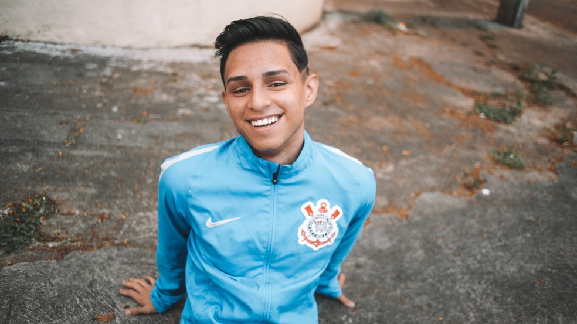

A História do Nobru
Você provavelmente já ouviu falar do Nobru, um dos maiores nomes do Free Fire e do mundo dos eSports no Brasil. Mas será que você conhece toda a trajetória desse jogador que saiu da periferia de São Paulo para conquistar o mundo? Acompanhe este artigo para saber mais sobre a incrível história de Bruno "Nobru" Goes.
Primeiros Passos
O jovem Bruno começou sua jornada nos games ainda na adolescência, mas o Free Fire foi o jogo que realmente mudou sua vida. Criado em uma comunidade de São Paulo, ele enfrentou muitas dificuldades financeiras. Apesar disso, Nobru sempre acreditou que poderia fazer algo grande com sua paixão por jogos.
Aos poucos, ele começou a se destacar em campeonatos locais, mostrando seu talento e habilidade incomparável. Sua dedicação logo chamou a atenção de grandes equipes de eSports.
A Grande Virada
Em 2019, Nobru entrou para o cenário competitivo de Free Fire como jogador da equipe Corinthians Free Fire. Com sua participação, a equipe conquistou o título mundial no FreeFire World series, realizado no Rio de Janeiro.

Foi nesse momento que o mundo conheceu o talento de Nobru. O jovem foi eleito MVP (jogador mais valioso) do torneio e se tornou uma referência no cenário competitivo.
Além dos Jogos
Mais do que apenas um jogador, Nobru também é empresário e criador de conteúdo. Ele fundou a Fluxo, uma organização de eSports que apoia novos talentos e tem como missão transformar vidas através do gaming.

Além disso, ele é um dos streamers mais assistidos do Brasil, com milhões de seguidores nas plataformas de transmissão. Nobru usa sua influência para inspirar jovens a perseguirem seus sonhos.
Acesse aqui o site oficial da Fluxo para acompanhar as novidades do Nobru e sua equipe!